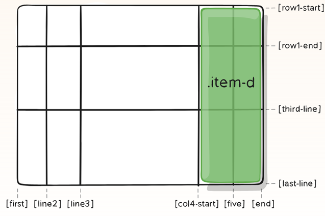
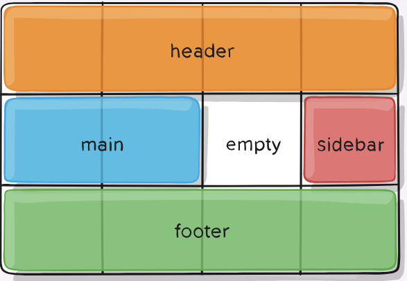
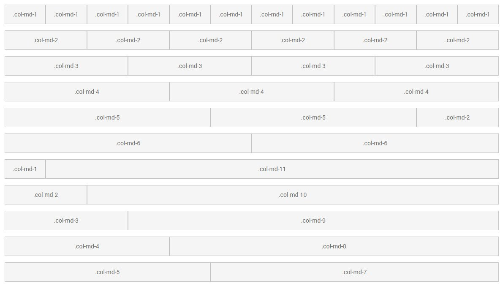

Summary
Document Object Model - An API that has a HTML, XHTML, or XML doc represented as a tree structure wherein each node is an object representing part of the document.
Established in 1998 by Tim Berners-Lee aka the WWWC.
Any visual changes occuring as a result may then be reflected in the display of the document.
Javascript (and something called JScript) was the first thing to let web devs create pages w client-side interactivity.
The DOM was essentially created to give devs a way to interact with the parts of an HTML doc, to modify it as well, because there wasn't one yet.
So the DOM is just "the standard" and an API that must be understood in order to interact with the elements therein.
When a web page is loaded, the browser creates a D O M of the page, which is an OO representation of an HTML document.
Most web browsers basically use the DOM to render a doc like an HTML page.
The top-most node is the Document Object - all obejects have their prototypes so programatically speaking it's safe to assume that any node in the DOM is represented as an object that has a prototype which follows some possibly arbitray prototype inheritance chain. That chain all heads to null which is the only object without its prototype.
DOM Levels
| DOM Level | |
|---|---|
| DOM level 0 | Didn't actually exist formally. |
| DOM level 1 | Finally provided a complete model for an entire HTML / XML document, including the means to change any portion of the document, via Javascript. |
| DOM level 2 | Published in late 2000. Introduced the getElementById function as well as an event model, AND support for XML namespaces, and CSS. |
| DOM level 3 | Published in 2004. Added support for XPath and Keyboard Event Handling, as well as an interface for serializing docs as XML. |
| DOM level 4 | Published in 2015 - It's a snapshot of the WHATWG living standard. |
DOM Event Concepts
Event - anything the user does to interact with the page.UI events - extends the DOM Event objects defined in the DOM.
Event delegation - JS event listeners fire on a DOM element AND all its descendants.
Event bubbling - inverse of delegation: events on an element will “bubble” up to parents.
Each available event has an event handler - a block of code, usually user-defined JS function, that will be run when the event fires.
When defining these blocks of code, it's registering an event handler. Event handler <-> event listener (more or less interchangeable).
DOM Event Types
| Types | ||||
|---|---|---|---|---|
| Clipboard Events | CSS Animation Events | CSS Transition Events | Drag & Drop Events | Document events |
| DOM mutation events | Form Events | Focus Events | Keyboard Events | Media Events |
| Mouse Events | Network Events | Progress Events | Printing Events | Resource Events |
| Session History Events | Storage Events | SVG Events | Tab Events | Text Composition Events |
| Touch events | Uncategorized Events | Update Events | Value change Events | View Events |
| Websocket Events | Window events |
addEventListener() - attaches an event handler to the specified ("input") element. Ex.:
Attach a click event to a <button> element.
When the user clicks the button, output "Hello World" in a < p > element with id="demo":
document.getElementById("myBtn").addEventListener("click",
function(){
document.getElementById("demo").innerHTML = "Hello World";
});
Syntax:
eventTarget.addEventListener(type,listener,[,useCapture]);
*The useCapture of addEventListener is what will know the capturing and bubbling states. By default, useCapture is false - meaning it's in the bubbling phase.
element whose inner content will be modified when the input element, #myBtn, is clicked.
Most Common JS Events
Events in JS
There are two main ways to handle/get notified of DOM events:on-event Handlers
The on-event handler is usually named according to the event it's designed to react to, such as onclick, onfocus, onkeypress, etc.DOM Events
Each event is going to have a corresponding event object as its "type".List of all Dom Events
DOM Event Objects
Any event is going to belong to a certain event object - for example, the mouse click event belongs to the MouseEvent object.All event objects are based on the Event Object; they inherit all of its properties and methods.
The Event Object
This is the parent of all other event objects. It has the following methods, properties and associated event types. Event Object Methods, Properties and TypesEvent "types" for individual DOM events = corresponding event objects
With dom event manipulation that also relates to (adds/removes css classes), be sure and troubleshoot the CSS, not just the JS.
List of all Event Objects
https://www.w3schools.com/jsref/obj_animationevent.asp HTML events are things that happen to HTML elements. Javascript can "react" on these events.HTML DOM Events
An HTML DOM Event allows JS to register different event handlers on elements in an HTML document.They're usually in combination with functions, and the function will be executed when the specified event (i.e. click). An HTML event is either a. something the browser does, or b. something the user does. Examples of HTML events:
event handler - a block of code, usually a user-defined JS funfction, that runs when the event is triggered (so on mouse click, run function using event handler).
When this function is defined to be run in response to that even triggering, it's called registering an event handler.
Event handler and event listener are usually interchangeable terms, although the listener listens for the event happening, and the handler is the actual code run in response to the event happening. (so addEventListener() is both the event LISTENER and the event HANDLER - the handler is the function called in the listener).
document.getElementById("coolBtn") //target the "input" element to be listened to (#coolBtn)
.addEventListener("click", //attaches event listener, click, to targeted element
function(){ document.getElementById("demo)} /* the event handler that contains the code (function) to be run when the event
being listened to is triggered - targeting the p element #demo */
.innerHTML = "Hello World" // the method performed on the "output" element (#demo)
Event Capturing vs Event Bubbling
If you have two elements, 1 and 2, and 2 is inside of 1, you can attach an event handler to both elements, such as onClick. Now when 2 is clicked on, the handler for both elements is executed. In what way that order executes is going to either be event capturing or event bubbling. In capturing, 1 executes first (so trickle-down on the elements); in bubbling, 2 would execute first (bubble upwards to parent elements).Resources
Document Object Methods and PropertiesDOM Events List
Comprehensive Guide to UI Events
Box Model
All HTML elements can be considered as boxes. The term "box model" is used when talking about a. Design and b. Layout.
It wraps around every HTML element.
padding - the layer just outside the content layer. The padding is transparent. More padding gives visual effect of increasing the size of the content layer.
border - the layer surrounding padding. Most of the time has a small width of maybe only 1 pixel. Unlike padding and margin layers, this layer can be given color and style.
margin - the outermost layer between the target element and its parent element. The margin is transparent.
Adding space to the margin gives the visual effect of increasing the content size of the parent element.
When you set the width and height properties of an element with CSS, you just set the width and height of the content area.
To calculate the full size of an element, you must also add padding, borders and margins.
total element width = (width) + (left + right padding) + (left + right border) + (left + right margin)
total element height = (height) + (top + bottom padding) + (top + bottom border) + (top + bottom margin)
CSS Variables and Custom Properties
CSS variables - entities containing specific values to be reused throughout a document.They're set using custom property notation (ex. —main-color: black;i).
They're accessed using the var() function (ex. var(—main-color);).
Complex websites have very large amounts of CSS, often with a lot of repeated values.
The same color might be used in hundreds of different places, requiring global search and replace if that color needs to be changed.
Variables address the problem that CSS is mostly a declarative language that lacks dynamic capabilities.
CSS Variables vs. Preprocessor Variables
CSS variables are live CSS properties running in the browser, while preprocessor variables have to get compiled into regular CSS code, therefore the browser knows nothing about them.
What this means is you can update CSS variables in a stylesheet document, inside the inline style attributes and SVG presentational attributes of an HTML file, or choose to manipulate them on the fly using Javascript. You can't do this with preprocessor variables.
CSS variables allow for one canonical declaration of a CSS property (that can be referenced throughout, and then changed at the root as desired to update across the whole stylesheet).
If no value is set for a custom property on a given element then the value of its parent is used.
CSS Variable Syntax:
—my-background: #000;
1. prefix the custom property with two dashes, 2. assign it a value like a regular CSS property
The value is referenced using var(), and is scoped inside a CSS selector:
:root{
—my-background: #000;
}
/* rest of the CSS file */
#foo{
background-color: var(—my-background);
}
Use CSS Variables in Javascript
It's the same as standard properties like background-position:If you have:
:root{
—mouse-x: 10px;
—mouse-y: 10px;
}
Then to update those values from JS you'd use:
let root = document.documentElement
root.addEventListener("mousemove"m e=> {
root.style.setProperty('—mouse-x', e.clientX + "px");
root.style.setProperty('mouse-y', e.clientY + "px");
});
Nesting CSS Variables
You can set the value of a CSS variable with another CSS variable, ex.:
:root{
—top-color: orange;
—bottom-color: yellow;
—my-gradient: linear-gradient(var(—top-color), var(—bottom-color));
}
CSS Variables with SVGs
You can use CSS variables to modify both a. style and b. presentational attributes inside inline SVGs.Ex.:
svg
symbol id="close-icon" viewbox 0 0 200 200
circle cx="96" cy="96" r="88" fill="none" stroke="var(—icon-color)" stroke-width="15"
/symbol
/svg
Media Queries
Adjust styles according to factors like:Optimize Text For Reading:
An ideal column should contain 70-80 characters per line, or about 8 to 10 words in English. So, each time the width of a text block grows past 10 words, consider adding a breakpoint.
Don't define breakpoints based on device classes - defining them based on specific devices or operating systems can result in a maintenance nightmare. Instead, the content itself should detemrine how the layout adjusts to its container. So, don't define breakpoints based on the device being used, but instead on the content!
Can design for the smallest mobile device first: pick major breakpoints by starting small, then working up.
Try designing the content to fit on a small screen size first, then expand as breakpoints become necessary.
*Use DevTools to view the various breakpoints:
2. Use viewport controls to set to Responsive mode
3. Click the three dots in the top right and select Show Media Queries
Can even load different style sheets with different breakpoints depending on the browser size:
<link rel="stylesheet" href="weather.css"> /*could be main styles -anything not media queried */
<link rel="stylesheet" media="(max-width: 600px;)" href="weather-2-small.css">
<link rel=""stylesheet" media="(min-width: 600px;)" href="weather-2-large.css">
@media - used to define a media query, preceding a media type
Media Types
@media screen, print{
/*styles*/
}
Media Features
Media features provide more specific details to media queries by allowing to test for a specific feature of the user agent or display device.
Full list of Media Features
/*hide an element when the browser's width is 600px wide or less*/
@media screen and (max-width: 600px) {
div.example{
display: none;
}
}
max-width = less than the amount, or the amount (think "up to" 700px with max-width: 700px). min-width = more than the amount, or the amount (think "down to" 700px with min-width: 700px).
Ex.:
//Set the background-color to lavender if the viewport is 800px or wider,
//set to light green if between 400 and 799px,
//or set to lightblue if smaller than 400px:
body{
background-color: lightblue;
}
media screen and (min-width: 400px){
body {
background-color: lightgreen;
}
}
media screen and (min-width: 800px){
body{
background-color: lavender;
}
}
Media Queries with CSS Grid
grid-template-areas - Allows you to write responsive layouts with a single rule inside a media query.It defines a visual grid system on both axes at once:
.user-profile__username{
grid-area: name;
}
.user-profile__avatar{
grid-area: avatar;
}
.user-profile__bio{
grid-area: bio;
}
.grid{
grid-template-areas:
'avatar name'
'bio bio'
}
/* a simple media query will rearrange the grid template:*/
@media (max-width: 700px){
.grid{
'name'
'avatar'
'bio';
}
}
/*the children element of grid - name, avatar, and bio - will now stack vertically in a viewport up to 700px */
The number of columns is inferred by the property values.
Each name separated by on or more spaces defines a column (and each row must define the same number of columns).
Easy Fluid Images
Can set images on a website to:
img {
max-width: 100%;
}
Instead of rendering at its native width and therefore overflowing its containing box, the image will render at its native dimensions, as long as its width doesn't exceed the width of its container.
Example
CSS selectors & Combinators
Fill List of CSS SelectorsCombinators
Measurements
px - good at spacing and layout but are not a good fit for font-size.em - values relative to the parent element.
If font-size of parent is 20px then 1 em = 20px.
So if the child element has 1.5 em then it would = 30px.
rem - values are relative to root html element instead of the parent element.
So, if font-size of the root element is 16px then 1 rem = 16px.
vw - relative to 1% of the width of the viewport.
If the viewport is 50cm wide, then 1vw = .5cm.
vh - relative to 1% of the height of the viewport
vmin - relative to 1% of the viewport's smaller dimension
vmax - relative to 1% of the viewport's larger dimensions
% - relative to the parent element
Keyframes
Gradients
background-image: linear-gradient(direction, color-stop1, color-stop2, ...);SVG
symbol tag - creates an invisible version of the SVG graphic which can then be instantiated as a visible copy of the same graphic with the
Build Your Own SVG IconsCSS Grid
CSS Grid - A CSS module that's most powerful layout system available in CSS.
It's 2-dimensional system, meaning it handles both columns and rows, versus flexbox which is largely 1-dimensional.
With Grid, you apply CSS rules to both a parent element, which becomes the Grid Container, and that element's children, which become Grid Items.
Steps to setting up a grid
1. Define a container element as a grid with display: grid
2. Set the column and row sizes with grid-template-columns/rows
3. Place the child elements into the grid with grid-column and grid-row.
ex.:
div class="container"
div class="item item-1"
div class="item item-2"
div class="item item-3"
Using CSS Grid With Webpage Layouts
grid-area - Gives an item a name so it can be referenced by a template created by the grid-template-areas property.
.item {
grid-area: name | row-start / column-start / row-end / column-end;
}
Example - Assigning a name to an item:
.item-d {
grid-area: header
}
Example - Specifying an item's area using shorthand:
.item-d {
grid-area: 1 / col4-start / last-line / 6
}
Here's a visualization of the above code:
grid-template-area - Defines a grid template by referencing the names of the grid areas that are specified with the grid-area property:
*Each row in the declaration needs to have the same number of cells.
CSS Grid Terminology
Grid Container - The element on which display: grid is applied.
Grid Item - The children, i.e. direct descendants of the container. In the following, the item elements are grid items, but the sub-item isn't:
div class="container"
div class="item"
div class="item"
p class="sub-item"
div class="item"
Grid Line - The dividing lines that make up the structure of the grid. They can be either vertical (column grid lines) or horizontal (row grid lines), and reside on either side of a row or column.
Grid Track - The space between two adjacent grid lines - i.e. the content in the columns and rows of the grid.
Grid Cell - The space between two adjacent row and two adjacent column grid lines. It's a single "unit" of the grid.
Grid Area - The total space surrounded by four grid lines. It may be comprised of any number of grid cells.
Resources
Grid Container and Grid Item PropertiesSimple Webpage Layout with CSS Grid CSS Standard Guides
Vendor Prefixes
-webkit: Chrome, Safari, almost all iOS browsers-moz: Firefox
-o: Old versions of Opera
-ms: IE and Edge
Animations
Animation Basics
-should be snappy-durations should be kept short
-should take advantage of easing
-you should choose ease-out animations for UI elements (i.e. onclick)
-avoid ease-in or ease-in-out animations unless you can keep them short - they tend to feel sluggish to end users.
easing - an animation that starts slowly and accelerates - it's the process of making an animation less "severe" or pronounced.
(easing basics)
Animating Between Views
Full guide to animating between views with CSS and JSUse translations to move between views:
*Avoid using left, top or any other property that triggers layout (so instead use translate(100%) for example).*Assume that there are two views, for example: a list view and a details view. As the user taps a list item inside the list view, the details view slides in, and the list view slides out.
To achieve this effect you need a container for both views that is set to overflow:hidden.
This way,both views can be inside the container side-by-side without the need for a horizontal scrollbar, and each view can slide side-to-side inside the container as needed.
CSS container:
.container {
width: 100%;
height: 100%;
overflow: hidden;
position: relative;
}
CSS Disadvantages
CSS has always been used to do layouts, but using tables, floats, positioning and inline-block are all essentially hacks which left out a lot of important functionality, like vertical centering.
Tips
*Width and height values can exceed 100%.*When doing colors on things like tables:
*Having 8 COLORS (4 that are each supposed to be complementary with another 4, well, DON'T do that. That's a lot more ridiculous than it sounds.
*Mock it up even if a screenshot with photoshop - bg, text, buttons can be layered via cut.
*Have colors typed out as names for css in textedit- makes actually writing css for them easier.
*Keep all related styles in same area in css.
*If changing colors alot esp. in CSS, use highlight -> cmd+d to select it 'linearly" and change more quickly.
*Do NOT have a bunch of different stylesheets for the same project (unless done properly like for modularity) - like a style.css, a responsive.css.
reisizing an element easily vs other similar elements (transform-scale):
.highlight .pricing-box {
box-shadow: 0px 0px 40px rgba(200, 200, 200, 0.9);
transform: scale(1.15);
-webkit-transform: scale(1.15);
-moz-transform: scale(1.15);
-ms-transform: scale(1.15);
-o-transform: scale(1.15);
}
Links
css-tricks.comRetina display media queries
BEM Methodology
CSS Object Model
Child and Parent Elements
Syle child elements individually without redundant css:.className:nth-child(1) - selects FIRST child element
.className:nth-child(2) - selects SECOND child elem
.className:nth-child(3) - selects THIRD
Ex.:
.call-out = has 3 child elems.
.call-out:nth-child(1){background-color: #ff0000;} -->> selects and styles the first
Properly enable responsiveness on a webpage
< meta name="viewport" content="width=device-width, initial-scale=1" >
This tells the browser to set the width of the content to the width of the device itself, and to scale that content to 1 on page load. Viewport Options
Call-to-actions
Can be a button, or banner, or text or anything.Prompts the user to CLICK it.
For an "immediate" interaction like to buy a specific product or service.
CTA testing can be done in A/B Testing to see which of severla graphics have the highest click success rate.
Terms
responsive layoutset viewport
fluid widths
overflow
position
Grid Structure
Useful Bootstrap Plugins
DatepickerDate Range Picker
bootpag - Dynamic Boostrap pagination
Wireframing
wireframe - the blueprint of your siteExample Steps:
1. Draft the design
2. Organize the content in html
3. Format in css
4. Ensure cross-browser compat.
5. Check validity/testing
6. Final code
Number of ways different designers go from design to implementation:
UX
UX Principles
*Empathy beats intuition - just think about it from the viewpoint of someon clicking around on your site.*Knowing the essentials - putting together points, lines and planes in a combination and bring color into the equation. Any UI component can be created.
*Good design is as little design as possible (aids usability)
*Optimize legibility
*Typographic hierarchy (i.e. consistency)
*Prototype and test with users and then iterate in response
*Improve accessibility with contrast between foreground and background colors
*Releasing minimum viable products early and testing them with actual users, moving from alpha to beta to live to adding features
*According to a UserTesting report, every dollar invested in UX can return between $2 and $100
*As a UX designer, your first task in a new job is clearly explaining the value you'll be bringing to the company and how you'll bring that about.
*Iteration reduces risk
Someone who is a UX specialist looks more at the human side of the design process, and would tend to do research and ask questions that will form the basis for coming up with design concepts/ideas, and then also doing user testing and evaluation to validate these ideas post development (or as part of the development cycle).
If you really want to cut through all the jargon and terminology, UX is really just a concept/approach. So if you think more like a user (i.e. from a goal driven perspective) rather than a developer (i.e. from a specification/implementation perspective) then you are on a good path to becoming a UX practitioner.
This is what they refer to as the user-centric approach to design and development.
In comparison, UI is a little less abstract because it deals directly with the user interface aspect, and although it can be as high level as creating design patterns and libraries, you can also get down to specific details like individual UI components and elements.
Problems for user-centric approach in very small teams is that we don't necessarily have enough time dedicated to users.
Front-end developer = foreman, can BUILD things, but might not understand how buildings should be created. An experienced foreman relies on things like municipal building codes ("design patterns") to guide construction, but the end result MAY END UP HARD TO USE OR UNATTRACTIVE.
UX = architect, trained in understanding spaces, how people will use the building and move through it, etc. They may not have the ability to plaster a wall o drive a nail however, and as a result THEIR MORE ADVENTUROUS DESIGNS MIGHT BE CHALLENGING TO BRING THE REAL WORLD.
As a front-end dev, you're the foreman and construction crew all rolled into one, but YOU MIGHT NOT BE AN ARCHITECT (yet) - you may not have the training about HOW to design the software for the best UX.
You can draw on examples from the world around you to produce *functional* apps, but it may not be sufficient to produce *usable* apps.
Good news is you can learn UX techniques that will help you to:
-Understand user needs
-Create designs to meet those needs, and
-Test those designs with real live users to verify.
UX Stages
1. Initial stagesThis is where the research happens.
A UX designer will generally get a brief from the client or manager asking them to do some project research.
If ___ wants a new app, the UX designer would combine DESK-BASED and FIELD research to get a full picture of who they're designing for.
This might include:
-Reviewing what the current site has to offer.
-Interviewing existing users to identify opportunities and pain points.
-Doing competitor research to see what else is out there.
These tasks will enable the UX designer to pinpoint the core features needed for the minimum viable product and start drafting some initial personas.
For example, for a food app the core features might be a menu, the ability to make online reservations and a branch finder.
2. Personas and information architectureWith the core features having been decided on, it's time to figure out what tasks each persona wants to perform and why.
An example persona for a food app might be Lucy, a go-getting 20-something who likes eating artisan salads on her lunch break.
An example task for her would be:
"Lucy likes to pre-order the salad via the app on the phone, as it saves her time between meetings."
Once this process has been completed for each persona being considered, then it's possible to REFINE THE CONTENT *NEEDED*, working out the information architecture and SITE MAP and beginning PAPER PROTOTYPES.
These are very rough sketches which can be shown to colleagues, and quickly and easily improved.3. Wireframes and user testing
After paper prototypes comes WIREFRAMES, USER TESTING, and plenty of ITERATING.
Wireframes typically go through many stages and there's no right/wrong way of doing them.
They often start as very basic b&w designs moving on to interactive designs where users can navigate between the different pages, as they would with the final product, to high-res designs which give the user a really clear idea of what the end product will look like.
**Each stage is punctuated with user testing and iterations.**
4. Visual design
During the visual design stage, wireframes are converted into mock-ups.
These include the final imagery, color, and typography.
The main focus is the look and feel - they should be pixel-perfect and show exactly what the design will look like when brought to life so they can be used as a guide when development starts.
Some UX designers do the visual design themselves using Photoshop etc, but others might choose to use a digital designer/front-end dev to get the design just right.
Definitions
Dynamic sectorsPersona (UX)
- The "person" you're using as a basis for whom you're designing the site.
Information Architecture
Core features of a website
Paper prototyping
Usability guide for writing user-friendly content
Links
Logo/SVG Design Fundamentals.sass vs .scss
When Sass first came out its syntax was noticeably different from CSS - it looked a lot like Haml. In version 3 Sass changed its main syntax to .scss, which is a superset of CSS. You can still use Sass syntax but .scss and its syntax is considered more accessible to those who already know CSS (the terms Sass and SCSS can be seen as essentially interchangeable - SCSS is just "newer Sass" syntax that's made to be more familiar).
Sass allows you to get more done in less code, more readably, and in less time.
Sass Variables
Variables always start with an $, ex.:
$variable-name: variable-value;
Example with HTML:
div class="heading"
h1 class="heading-primary"This is a primary heading
h2 class="heading-secondary">This is a secondary heading
Then define two variables for primary and secondary colors:
$color-primary: #000;
$color-secondary: #fff;
Then style the above headings:
.heading-primary{
color: $color-primary;
text-align: center;
}
.heading-secondary{
color: $color-secondary;
text-align: center;
margin-top: 15px;
}
After compilation, the variables are replaced by their actual values in CSS.
Nesting CSS
CSS doesn't support selector nesting. With Sass, you can nest child selectors inside the parent selector.
Instead of having to write:
.navigation{
background-color: yellow;
padding: 10px;
}
.navigation ul {
list-style: none;
}
.navigation li {
text-align: center;
margin-top: 10px;
}
With the above, you're having to repeat the navigation class name every time you want to style its children. Instead use nested selectors:
.navigation{
background-color: yellow;
padding: 20px;
ul{
list-style: none;
}
li{
text-align: center;
margin-top: 20px;
}
}
Mixins
Mixin syntax:
@mixin mixin_name(){
//
}
A mixin is a reusable piece of code similar to a function. It allows you to make groups of CSS declarations to be reused throughout the site.
You can also pass in values to make mixins more flexible.
An example of a mixin is for vendor prefixes:
@mixin transform($property){
-webkit-transform: $property;
-ms-transform: $property;
transform: $property;
}
.box { @include transform(rotate(30deg)); };
1. Create a mixin using the @mixin directive and give it a name. In the above, it's named transform. 2. The variable $property inside the parantheses is used to pass in a transform of whatever we want. 3. You can then use the mixin as a CSS declaration starting with @include followed by the name of the mixin.
So the above compiles down to:
.box {
-webkit-transform: rotate(30deg);
-ms-transform: rotate(30deg);
transform: rotate(30deg);
}
Another mixin example:
@mixin absCenter(){
position: absolute;
top: 50%;
left: 50%;
tranform: translate(50%, -50%);
}
.box{
background-color: red;
div{
width: 200px;
height: 200px;
background-color: blue;
@include absCenter;/*this works even on nested elements: the div now has:
position: absolute;
top: 50%;
left: 50%;
transform: translate(50%, -50%);
}
You can also pass arguments to the mixins:
@mixin box-shadow-vendor($x, $y, $blur, $spread){
-webkit-box-shadow: $x $y $blur $spread;
-moz-box-shadow: $x $y $blur $spread;
-mos-box-shadow: $x $y $blur $spread;
-box-shadow: $x $y $blur $spread;
}
.box{
background-color: red;
div{
@include absCenter;
@include box-shadow-vendor(0, 5px, 5px, #fff);
}
}
Functions in Sass
Sass has mixins as well as functions. Sass functions are similar to JS functions.
They can accept arguments and return a value.
Ex.:
@function divide($a, $b){
@return $a / $b;
}
@function multiply($a,b){
@return $a * $b;
}
div{
height: multiply((divide(60, 2)), 1px);
}
Partials and Import
Partials in Sass are separate files containing Sass code that make the code modular. It allows to have separate Sass files for different components.
For example, building a more elaborate math library for Sass off of the example above could be separated out.
A partial's name always starts with an underscore. Use @import to import a partial into another Sass file. For example, importing the _header.scss file into main.scss:
// main.scss
@import 'header'; /*the partial being imported doesn't need to use the _ or .scss when importing */
*Unlike CSS imports, Sass imports don't send another HTTP request for fetching the partial since all the imports are placed into a single CSS file during compilation.
*Inheritance/Extend
You can share CSS properties from one selector to another using the %. Using placeholder classes allow you to only print something in the compiled CSS once it's extended.
*Placeholder selector (%) - similar to the class selector in CSS, which uses ., but have the additional property that they will not show up in the generated CSS; only the selectors that extend them will be included in the output.
This helps keep CSS very DRY.
In the following:
%message-shared{
border: 1px solid #ccc;
padding: 10px;
color: #333;
}
%equal-heights{
display: flex;
flex-wrap: wrap;
//this will never print because @equal-heights never ends up being extended
}
.message{
@extend %message-shared;
}
.success{
@extend %message-shared;
border-color: green;
}
.error{
@extend %message-shared;
border-color: red;
}
.warning{
@extend %message-shared;
border-color: yellow;
}
The above code tells .message, .success, .error, and .warning to behave just like %message-shared .
So anywhere %message-shared shows up, .message, .success, .error & .warning will too.
The magic then happens in the compiled CSS, where each class gets the same CSS properties as %message-shared.
This helps you to avoid having to write multiple class names on HTML elements.
Ampersand (&) Operator
If you had to style the following HTML:
button class="btn btn—green" Hello World /button
Instead of doing this:
.btn{
display: block;
padding: 5px 8px;
}
.btn—green{
background-color: green;
}
.btn: hover{
background-color: transparent
}
It can instead be written as:
.btn{
display: inline-block;
padding 5px 8px;
&—green{
background-color: green;
}
&:hover{
background-color: transparent
}
}
This allows you to nest selectors that share the same name, and during compile-time the & operator is replaced by the enclosing selector name.
Compile Sass Code to CSS
2 main options:
1. Gulp automate
2. node-sass - a sass compiler.
2. Create npm script to compile Sass code into CSS code - add script inside the script section of package.json: "compile-sass": "node-sass sass/main.scss css/style.css —watch"
3. Run using npm run compile-sass
Concepts
@mixin directive@include directive
@import directive
@extend directive
pass arguments to mixins
sass variables - declared with $
placeholder selectors - use %, similar to . css selector
JS Editions:
(ESNext features are actually referred to as proposals since they haven't happened yet.)
Callback Functions:
Callback - A function which is:A callback is a function you provide to another piece of code, allowing it to be called by that code. To "call back" means to pass a function to other function or other code. So it's passed into another function as an argument, which is then invoked inside the "outer function" to complete something. And once a callback function's parent function completes, the function passed as an argument is then called.
Callback functions are also called higher-order functions.
Example of a callback:
XMLHttpRequest.onreadystatechange = callback;
This is just a function passed almost like the parameters for another function, that is then also called when that "parent function" is triggered. So you run the parent one and it calls back whatever then gets filled in.
Closures:
Closure - Any function where you are using a variable(parameter) outside the scope.
Closures are important because:
1. A scope is at the function level, not the block level
2. Much of what you do in hs is async / event-driven
3. They make event-driven code a lot easier to write
A closure is an inner function that has access to the outer (enclosing) function's variables and parameters. The inner function then has access to the outer function's variables and parameters. Even after the outer function has returned, the inner function still has access to the outer function's variables. So, you can call the inner function later in your program.
A closure is a function that returns a function - so it's the whole thing and not just the inner function being the closure.
The function that is returned (the inner function) is created inside the called function (the outer).
Due to the scoping rules we’ve seen, the inner has access to the variables and arguments of the outer.
Functions created in a particular scope retain access to vars in the scope even if they are called outside of it, because there's 1. create and 2. call with functions.
Example of a closure:
function one(a, b){
function two(){
return "foo";
}
var variable;
return variable;
}
two();
So, even though two is called outside of the function one because it's created inside of one, it has access to one's scope.
two() can access one's params (a and b), and var variable / the return statement since it's in one's body and therefore scope.
Closures are possible because Javascript uses lexical scoping.
Lexical scope - The outer scope of a function which is defined inside a closure.Example of a closure:
var passed = 3;
var addTo = function(){
var inner = 2;
return passed + inner;
}; /* This is a closure - var passed is available inside the function,
but var inner is not available outside the function */
Cross-Browser Issues:
JS in different browsers:
This originates in the 90s when there were IE and Netscape - Netscape had JS and IE had Jscript and VBScript Things like jQuery were created to abstract away differences in brower implementations
JS compatibility issues happen when:
Currying:
Currying provides a way for working with functions that take multiple arguments, and using them in frameworks where functions might take only one argument. An example would be situations where some analytical techniques can only be applied to functions with a single argument. In theoretical work it provides a way to study functions with multiple arguments in a simpler theoretical model that provides only one argument.
Currying can equal returning a bunch of things or also like how php template tags let you "repeat" things easier than with html across pages.
Currying - transforming a function that takes multiple parameters, into the same function with less parameters.This "curried effect" is achieved by binding some of the args to the first function invoke, so those values are fixed for the next invocation.
Translating a function that takes multiple arguments, into a sequence of functions, each with a single argument.
Currying is like prefilling certain parts of a function for code reuse - useful in event handling.
Currying is a pattern that's not native to js, so you can write a currier that can transform any given function to a curried version of itself:
var currier = function(a){
var args = Array.prototype.slice.call(arguments, 1);
return function(){
return fn.apply(this, args.concat(
Array.prototype.slice.call(arguments, 0)));
};
};
Curried function example:
var babyAnimals = function(a){
return function(b){
var result = 'i love '.concat(a).concat(' and ').concat(b);
return result;
}
}
Debugging:
Can be done via:
Linting can go through source code and find:
ESLint -
Javascript linter that requires node.js
JSHint -
Online linter
Feature Detection:
Feature detection - Working out whether a browser supports a certain block of code, and running different code dependent on whether it does or doesn't so a browser can always provide a working experience rather than crashing/erroring in some browsers.
An example would be testing flexbox support in a browser.
Modernizr is the industry standard for feature detection tests. Feature detection is made easy in CSS with the @supports @ rule.
Do not confuse feature detection with browser sniffing:
feature detection = good
browser sniffing = bad
Browser sniffing is bad because it's an error prone process - the only real use is fixing a bug for a very specific version of a particular browser.
if("geolocation" in navigator){
navigator.geolocation.getCurrentPosition(etc…)
//show location on a map
} else{
//give user choice of static maps instead
};
Fetch API
The Fetch API will be familiar with anyone who has used XMLHttpRequest. This API provides a more powerful and flexible feature set.Fetch provides a generic definition of Request and Response objects, as well as other things involved with network requests.
These objects will be available for many things, including:
The fetch() method takes one mandatory argument, which is the path to the resource you want to fetch.
It returns a Promise that resolves to the Response to that request, whether it's successful or not.
You can also pass in an init options object as the second argument optionally.
Once a Response is received, many methods are available for defining what the body content is and how it should be handled.
Get and Set
Get:
Set:
Disadvantages of Getters and Setters
Notes
Hoisting:
Variables declared w/ var are “hoisted” to “top” scope as in they can’t be declared twice I think.
Basically why when you have an if else statement, you can’t declare the same variable twice using “var” or it will get an “___ already defined” error.
Technically you could have an if/else statement referencing “action” and define “var action” after them.
I.I.F.E.:
Immediately Invoked Function Expression - Allows you to control variable scope - variables inside an IIFE aren’t available outside it. It's a function that runs as soon as its defined.Image Maps:
You can make image maps in Javascript: https://www.tutorialspoint.com/javascript/javascript_image_map.htmAn image map = clickable areas. You can also define coordinates.
Null vs. Undefined vs. NaN:
Null = Can be assigned to a variable as a representation of no value.
Undefined = A variable that has not been assigned a value.
typeof null = object
typeof undefined = it's already a type - undefined
So, undefined is a type itself, while null is an object you can interact with ("empty").
So null can be some empty placeholder thing, ex.:
null + 3
= 3
Whereas with undefined:
undefined + 3
= undefined or NaN
If arithmetic makes no sense, JS yields special Numbers:
Infinity or NaN(Not a Number).
console.log(5 / 0);
//->Infinity
Properties vs. Methods:
Method:
In OOP, it's a procedure associated with a. A message (almost like an HTTP header) and b. an Object.
That's what an object is and that's what object oriented is: everything including DOM elements has their a. properties (if available) and b. methods (if available). So all the object.thing1.thing2 can be applied to everything.
Ex.: A Window object would have methods such as open and close.
That's what it means by procedural is the method is a procedure to be carried out as a message to the object to enact something, while its state is a property.
Open and close i.e. procedures i.e. imperatives are methods or things you can perform on/with the object. State or value in an array or key-value pair or even like location are properties.
Methods are like miniature algorithms, while properties are characteristics. Methods allow you to interact with the properties of an object. This is also what people mean when they say encapsulation.
Methods are actions that can be performed on objects. The name:values pairs (in JavaScript objects) are called properties.
Prototypes:
Javascript is multi-paradigm:
1. OOP with prototypal inheritance
2. Functional programming
3. Imperative/procedural programming
Every JS object has a prototype. The prototype is also an object. All JS objects inherit their properties and methods from their prototype. The prototype pattern creates new objects, but rather than creating non-initialized objects, it returns objects that are initialized w the values copied from the prototype object.
So there's:1. The prototype (sample)
2. The clone
3. The creation of that clone
Ex.:
1. function CustomerPrototype(proto){} - //the prototype
2. function Customer(first, last, something){} - //The cloned objects being created
3. function run(){} - //creates new object by asking prototype to clone itself
Rules:
Prototype Example
var prototypeof = {firstName:"John", lastName:"Doe", age:50, eyeColor:"blue"};
var objwithprototype = Object.create(prototypeof);
Object.getPrototypeOf(objwithprototype);
console.log(Object.getPrototypeOf(objwithprototype));
console.log(prototypeof.isPrototypeOf(objwithprototype));
var test= [];
Object.assign(test, prototypeof);
console.log(test);
console.log(Object.entries(test));
console.log(typeof test);
Terms:
mutations - changing or affecting a source element; a mutation is a side effect.Examples of mutable versus immutable methods:
Array.prototype.push (source element mutated) Array/prototype.unshift (source element mutated) Array.prototype.concat (immutable) Spread Operator (…) (immutable)
Array.prototype.push does not return a copy of the array it's used on; rather, it mutates the original array by adding a new element and returning the length property of the object upon which the method's called.
concat does not mutate - the goal with mutations versus immutables iskeeping the source array untouched (to prevent side effects). shallow copies vs deep clones - use cloneDeep if the elements of the source array are other arrays or objects that need to be kept untouched. Deep cloning, however, is very expensive in terms of performance. new keyword - new constructor[(arguments)]
constructor - Special method for creating an object within a class.
So JS DOES have classes but they were only introduced in ECMA 2015 ( so constructors are kind of new with JS)
class-based - constructors & factory method pattern.
prototypal - prototype design pattern. Each instance of an object created from the prototype is just a copy.
Prototypal vs. Classical:
Classical inheritance - Aka class inheritance "instances" inherit from classes, like a blueprint (PHP).These are usually instantiated via constructor functions using the new keyword. (PHP)
Class inheritance may or may not use the "class" keyword.
Prototypal inheritance - Aka "instances" inherit directly from other objects aka "prototypes".
They're usually instantiated via "factory functions" or ex. object.create().
Prototypal inheritance is simpler and more flexible than class inheritance.
Prototypal inheritance = objects WITHOUT CLASSES, OLOO.
Pure Functions
A function where the return value is only determined by its input values w/o side-effects.Ex.: math.cos(x). Computing this does not change "x" - doesn't ask for input or change state.
So pure = stateless for the most part.
Recursion
Recursion - A function invoking (calling) itself again and again until it reaches the final return condition at which point it returns the final value.
Each time the function is called, a new local scope is created.
Return Statements
Return - a and b are a function’s parameters, and the value it returns is signified by the return keyword.
Scope
A variable’s scope is the portion of code where it’s visible. newline It's important to understand that a block (identified by a pair of curly braces) does not define a new scope. A new scope is only created when a function is created, because var does not have block scope, but function scope.block scope - Block = set of curly braces, ex.:
if(x > y){
...
}
Selectors
Use a selector to grab an element, ex.:
var numOne = document.getElementById(“num-one”);
Side Effects:
side-effects - Any app state change that is observable (aka opposite of pure functions). Side effects are avoided in functional programming.
Ex.: Writing to a file, triggering any external process, logging to the console.
Regex
.replace(/\D/g, '')
Regex cheat sheet
State
State - Information about something held in memory. The set values that something's attributes have at any given moment (things saved to memory).
Ex.: 10, or "HELLO"= By itself is stateless - does not represent any state. (aka pure values)
There's a state when these "pure values" are associated to some kind of entities, for ex. objects.
Ex.:
var car = ("color", "blue"); //properties of "car"
Since car has properties it has a state.
It's associated to an "entity" (i.e. class/object I think), but ALSO to a point in time.
So if today car = color, blue but tomorrow it's color, black, then black is the new state of that car object.
Properties = states.
When the properties change, the states change.
Shared state - aka shared mutability. Can be bad because code isn't like containerized or separated or whatever, so it can be a mess.
this Operator
Ex.:"John is running fast because he is trying to catch the train".
The this operator acts like the pronoun "he" - so we don't have to say "John is running fast because John is trying to catch the train".
Ex.:
var person = {
firstName: "Bob",
lastName: "Logg",
function fullName(){
console.log(this.firstName + this.lastName);
console.log(person.firstName + person.Lastname);
}
}
In this instance, this.firstName is the same as saying person.FirstName, so it just lets you reference it without being redundant.
This is used because there could be a global var w the same name as the one you're interacting with (ex. global person and var person).
Ex.:
$("button").click(function (event){
console.log($ (this).prop ("name"));
this will have a val of ($("button"))
});
So this can be used in syntax where you need to access an function's props within the function itself ex.:
function showFullName(){
console.log(this.firstName + this.LastName);
}
Types
There are 7 total data types:
Primitive types:Non-primitive types:
All types except the non-primitive type, object, define immutable values, incapable of being changed.
Function = primitive type
Object = complex type
Every "thing" in JS - including primitive data types and other things - Ex.:
These are all OBJECTS - as in they have specific PROPERTIES and then METHODS. So Math is an object as well.
Terms:
Polymorphism - A type whose operations can be applied to values of some other type or types. (ex. int and variables)Subtypes - Ex. cat is a subtype of animal. So, an expression of type cat can be used anywhere that type animal is used.
Type Theory - When with math they write f: X —> Y, X is the old type, Y is the new type being built from the old, and the arrod is a type constructor that i guess designates this.
Void Operator
Void:Tips
* Chain methods together when possible.* Map with arrow function
* Use . notation to access a property
* Object syntax (const object = {}; )
* Objects can contain other objects
* In JS, an empty string returns a false
event object = e as parameter
DOM operations tend to be slow - which is why the Virtual DOM (diffing vs. real DOM - only updating what's needed a.k.a. computing minimal DOM operations) is important.
* Properties are accessed as Obj.property, methods are Obj.method().
* In loops, i is a loop counter variable; can be thought of as "index"
* this.attributes["data-img"] is a different accessor, but same way as saying this.attributes.data-img, but since that's bad syntax you want to use the array accessor instead.
* modular = isolated = don't use globals typically
map vs for loop
Both have their positives:Most developers will understand a for loop and know what you're doing right away. A for loop can be thought of as easier to read.
map() can save you 2 or 3 lines of code.
As far as performance goes, map() is built internally with something similar to a for loop, and there might be a few milliseconds of difference when it comes to performance speeds through large enough iterations but that's it. Map and reduce both emphasize readability and maintainability.
forEach() - executes a provided function (a callback) once for each element, but doesn't return anything.
map() - executes a provided function (callback) once for each array element, and creates a new array with the results of this execution.
Detect client's browser name
navigator.appNameFind the number with the highest value of x and y
Math.max(x,y)every() vs filter()
filter() creates an array of all the elements matching the condition in the callback, while every() returns true (boolean) if every element in the array matches the condition in the callback.Function Calls
Calling a function literally just means saying myFunction().for vs forEach
//functionally equivalent
for (var i = 0; i < arr.length; i++) {
console.log('Element', i, 'is', arr[i]));
}
arr.forEach(function(element, i) {
console.log('Element', i, 'is', element);
});
*forEach only works on arrays, however. Don't use if you need to count for example.
Accumulator vs. Parameter - usually used interchangeably; however, a parameter is something given to a function (declaration, definition or prototype), and an argument is something actually passed when calling that function. Ex.:
var test = function(a,b){
console.log(a); //both print 10
console.log(arguments[0]));
}
test(10,20);
Unfortunately, sometimes algorithm knowledged is just based on knowing quirks: like, there's an array method for reverse, but not for a string. So to reverse a string you have to split it into an array, reverse it, then join it again.
Using apply
.apply - It's common to use apply where you want to use the elements of an array as arguments to a function.null
null = can be used as a placeholder (for a function's arguments):
function myFunction (a, b, c, d){}
var args = [0, 1, 2, 3];
myFunction.apply(null, args); //apply the array args as arguments to the function myFunction
Arguments object
Arguments object - an array-like object accessible inside all functions, containing the values of the args passed to that function. Array-like means arguments has a length property/properties indeed from zero, but doesn't have Array's built-in methods like forEach() and map().Change content of html element
p id="demo" This is a demonstration. /p
document.getElementById("demo").innerHTML = "Hello World!";
Return last item in array
return array.length-1;
Find the largest number in an array
function findLargest(){
return Math.max(…arr) //spreads array into values so it can be operated on I think
}
Use dot notation to access a property
Strings
String Methods
*Methods and properties are accessed the same way, ex.:str.indexOf() is a method, str.length is a property.
charAt() - returns character at specified position of string, ex.:
var str = "Hello World";
var strResult = str.charAt(3);
concat() - join two or more strings. Ex.:
var str1 = "Hello ";
var str2 = "world,";
var str3 = " have a nice day";
var result = str1.concat(str2, str3);
endsWith() - checks if a string ends with the characters of a specified string, ex.:
var str = "Hello world, welcome to the universe.";
var strCheck = str.endsWith("universe.");
includes() - check if a string includes specified characters, ex.:
var str = "Hello World, welcome to the universe.";
var strResult = str.includes("welcome);
indexOf() - returns the position of the first occurence of a specified value in a string. Returns -1 if the value to search never occurs.
Ex.:
var str = "Hello World, welcome to the universe.";
var strResult = str.indexOf( "welcome"); //returns 13
lastIndexOf() - returns the position of the last occurence of a specified value in a string. match() - searches a string for a match against a regex; returns the match(es) as an Array object. Ex.:
var str = "The rain in SPAIN stays mainly in the plain";
var res = str.match(/ain/g);
repeat() - returns a new string with a specified number of copies of the string it's called on, ex.:
var str = "Hello World";
str.repeat(2);
replace() - a. searches a string for a specified value or regex, and b. returns a new string where the values are replaced.
var str = "Hello World";
var strNew = strReplace("World", "Universe"); //specify word to be replaced
search() - searches a string for a specified value and returns the position of the match.
slice() - extracts part of a string, returns the extracted part in a new string.
Use the start and end parameters to specify the part of the string to extract.
Syntax: string.slice(start, end)
split() - split a string into an array of substrings, then returns the new array.
*If an empty string ("") is used as the separator, the string is split between each character.
Ex.:
var str = "How are you today?";
str.split(" "); //returns How,are,you,doing,today?
startsWith() - determines whether a string begins with the characters of a specified string; returns a boolean. Ex.:
var str = "Hello World";
var strStart = str.startsWith("Hello");
substr() - literally the same as slice().
substring() - literally the same as slice().
toLowerCase() - converts a string to lowercase letters.
toString() - returns the value of a string object. Ex.:
var str = "Hello World";
var result = str.toString(); //returns Hello World
toUpperCase() - converts a string to uppercase letters.
trim() - removes whitespace from both sides of a string.
valueOf() - returns the primitive value of a String object (not typically used).
String Properties
constructor property - returns a reference to the function that created the instance object.length property - returns length of a string in a number of characters.
Prototype property - use to add a new property to all objects of a given type (add new properties and methods to existing object types, like "employee"), ex.:
function employee(name, jobtitle, born) {
this.name = name;
this.jobtitle = jobtitle;
}
employee.prototype.salary = 2000l
Arrays
Array Methods
concat() - join two or more arrays.copyWithin() - copy the first two array elements, and replace the last two array elements with them.
entries() - create an Array Iterator object with key-value pairs for each item. Ex.:
var fruits = ["Banana", "Orange", "Apple"];
fruit.entries();
/*prints out:
[0, "Banana"]
[1, "Orange"]
[2, "Apple"]
every() - checks if all elements in an array pass a test, provided as a function. Ex.:
var ages = [32, 33, 16, 40];
const checkAdult = (age) => { //check if every element in the array has a value of 18 or more
return age >= 18;
};
ages.every(checkAdult);
fill() - fill all array elements with a static value, ex.:
var fruits = ["Bananas", "Oranges", "Apples"];
fruits.fill("kiwi");
//returns kiwi kiwi kiwi
filter() creates a new array with all elements that pass whatever test is implemented by the provided function (callback). So if a condition is true for a value being filtered, it gets put in the array Ex.:
const isBigEnough = (element) {
return element >= 10;
}//the callback function with the condition to be tested
var filtered = [12, 5, 9, 130, 44].filter(isBigEnough);
Ex.:
var words = ['word', 'longword' 'longerword', 'longestword'];
var filtering = (words.length > 5);
var result = words.filter(filtering);
find() - returns the value of the first element in an array that passes a given test (callback) Ex.:
var ages = [3, 10, 18, 20];
var checkAdult = (age) => {
return age >= 18;
};
ages.find(checkAdult);
findIndex() - almost the same as find(), but returns the index of that first value that passes the test instead of returning the actual value itself.
*forEach() - calls a provided function once for each element in an array, in order (not unlike for loop).
**from() converts either a. any object with a length property, or b. an iterable object into an Array (ex. a string). Example:
var myArr = Array.from(""ABCDEFG);
//returns array ["A", "B", "C", "D", "E", "F", "G"]
includes() - check if an array includes a given value, returns boolean.
indexOf() - searches array for specified item, returns its position.
Syntax: array.indexOf(item, start)
isArray() - check whether an object is an array. Syntax: Array.isArray(obj)
join() - joins the elements of an array into a string, and returns the string.
The elements will be seaparated by a specified separator (optional); the default separator is a comma. Syntax: array.join(separator)
Ex.:
var fruits = ["Bananas", "Oranges", "Apples"];
var combine = fruits.join();
//outputs Bananas,Oranges,Apples - comma is separator by default
keys() -returns an array of a given object's property names, in the same order you'd get with a normal loop, ex.:
const object1 = {
a: 'string',
b: 42,
c: false
};//so it returns an object's keys, in order
lastIndexOf() - searches array for specified item, returns its position.
map() creates an output array after calling a function for every input array element. Ex.:
var numbers = [4, 9, 16, 25];
const myFunction = () => {
numbers.map[Math.sqrt];
};
pop() - removes the last element off the end of an array and returns that element. (pops off the end)
push() - adds specified element(s) to the end of an array; returns new array length. (pushes into the end)
*reduce() - reduces given array to a single value; it executes a provided function for each value of the array, from left to right.
The return of that function is stored in an accumulator. Ex.:
var numbers = [65, 44, 12, 4];
function getSum(total, num) {
return total + num;
}
function myFunction(item) {
numbers.reduce(getSum);
}
reduceRight() - same as reduce() but operates right-to-left on an array instead of left-to-right.
reverse() - reverses order of items in an array.
shift() - removes the first item off the beginning of an array (shifts array "backward" - removes first item)
slice() - returns selected elements of an array as a new array object. Syntax: array.slice(start, end). slice() does not include the last given element.
some() - checks if any elements in an array pass a test, provided as a function - returns a boolean. Ex.:
var ages = [3, 10, 18, 20];
function checkAdult(age){
return age >= 18;
}
function myFunction(){
ages.some(checkAdult);
}
sort() - sorts items of an array - can be alphabetic, numeric, ascending (up) or sescending (down).
By default, sort() sorts the values as strings in alphabetical, ascending order.
The sort() method provides incorrect results when sorting numbers if doing so by default - so provide a compare function. Ex.:
var points = [40, 100, 1, 5, 25, 10];
points.sort(function(a, b){return a-b}); //compare function used with sort - ascending order
points.sort(function(a, b){return b-a}); //descending order
splice() - adds or removes items to or from an array.
Removing elements - give the index parameter, and number of elements to be removed: array.splice(index, number of elements);
If no second parameter is given, every element starting from the given index (as parameter a) will be removed from the array.
Adding elements - these are specified as the 3rd, 4th, and 5th parameter (depending on how many are being added): array.splice(index, number of elements, element, element…); Example that adds a and be to the beginning of an array while removing nothing:
array.splice(0, 0, 'a', 'b');
*Adding elements with splice() requires extra parameters/syntax.
toString() - converts array to a string.
unshift() - adds new items to the beginning of an array; returns new length (so shift "shifts front of array" after removing first element, this "unshifts" it by adding one instead). valueOf() - returns an array (a.k.a. the value of the array). Ex.:
var a = [1, 2, 3, 4];
if (valueOf(a) != 1, 2, 3, 4) {
//run something
}
Array Properties
constructor - returns an array's constructor function.length - sets or returns the number of elements in an array.
prototype - constructor that that allows you to add new properties and methods to the Array() object.
So, when constructing a property, ALL arrays are given the property, and its value, as default.
When constructing a method, ALL arrays have this method available.
*So Array.prototype doesn't refer to a single array but to the Array() object itself.
Default Parameters
Parameter Defaults
*If a function is called with missing arguments (less than declared), the missing values are set to undefined.
Sometimes this is acceptable, but sometimes it's better to assign a default value to the parameter:
const myFunction = (x, y) => {
if (y === undefined) {
y=0;
}
}; //x is not called but is defined for clarity's sake
JS Parameter rules
*Javascript function definitions do not specify data types for parameters.
*Javascript functions do not perform type checking on the passed arguments.
*Javascript functions do not check the number of arguments received.
for…of Loop
for…of iterates through a list of elements, like an array, and returns the elements (not their indexes) one by one. Ex.:
let arr = [2, 3, 4, 1];
for (let value of arr) {
console.log(value);
}
//Output:
//2
//3
//4
//1
Spread Attributes
Introduced in ES6, spread allows an iterable (i.e. something that can be iterated over) to "spread" or expand, individually, inside a receiver.The spread operator […] is used to "spread" something, like a string stored in a variable being called using that operator, ex.: […codeburst] //codeburst is a string stored in a var, and contains 'CODEBURST' . An example is using an array with 3 indexes to "spread" into a function that takes 3 arguments.
An iterable can be a string, an array, a set, or anything that can be looped over. Ex.:
var phrase = 'PHRASE';
var characters = [ …phrase ]; //spreading the string 'PHRASE'
// [ 'P', 'H', 'R', 'A', 'S', 'E']
*Spread (ES6) is more or less interchangeable with the apply method.
*Spread can also remove a key from an object without mutation.
Maps
Maps are different from the map() method. Maps hold key-value pairs. They're similar to an array, but you can define your own indexes; indexes are also unique in maps. Ex.:
var NewMap = new Map() //insantiates a new Map() object, NOT calling the map() method
NewMap.set('name', 'Sam');
NewMap.set('id', '234935');
NewMap.set('interest', ['javascript', 'node']);
NewMap.get('name'); //Sam
NewMap.get('id'); //234935
NewMap.get('interest'); /['javascript', 'node']
Sets
Sets - are very simple - they're used to store the unique values of any type. A set is a collection of items which are unique, i.e. no element can be repeated.Syntax:
set1.add(val);
//Parameter:
//val - value to be added to set
//Returns:
the set object
Example:
var set1 = new Set(); //create a new empty set
set1.add(10);
set1.add(20);
Static Methods
Static methods - intended to provide class-specific methods for OOP in Javascript.Static methods are similar to class methods in Ruby.
To declare a static methods, prefix a method declaration with the word static inside the class declaration, ex.:
class myClass(){
static methodName(){
console.log("something");
}
}
Static methods are often used to create utility functions for an application.
Getters and Setters
Basics
Getters and setters are useful if you use JS classes. They're accessor properties, represented as "getter" and "setter" methods, and are denoted by get and set.The getter works when obj.propName is read; the setter works when obj.propName is being defined.
Accessor properties are only accessible with get/set.
A property can either be a data property or an accessor property, but not both.
Get
get - a function without arguments; works when a property is read. Get example:
let user = {
name: "John",
surname: "Smith",
get fullName() { //notice that get has no argument
return '${this.name} ${this.surname}';
}
};
Set
set - a function with one argument; called when the property is being set. Ex.:
let user = {
name: "John",
surname: "Smith".
set fullName(value){ //notice that set has one argument being set
[this.name, this.surname] = value.split(" ");
}
};
Destructuring
The destructuring assignment syntax is a Javascript expression that makes it possible to unpack values from arrays, or properties from objects, into distinct variables.Basic assignment example:
var o = {p: 42, q: true};
var {p, q} = o;
//this destructures an object
Promises
Promises either succeed or fail, once.Have a state of either fulfilled, rejected, pending or settled. newline Example of a promise that resolves immediately:
var p1 = Promise.resolve("Resolve Me")
p1.then
//then is a function that takes two optional arguments, being first a. a callback for success, and b. another for failure * these are optional
Terms
.then(res)
Promise.resolve
Promises guide
super - keyword used to access and call functions on an argument's parent.
Ex. super([something]); //calls parent constructor
progressive web apps - designed to deliver an experience similar to native apps. One of the most significant abilities for this to occur is for the "app" to function when offline, which can be accomplished using service workers.
progressive web apps <-> service workers
jQuery Method Examples:
$("#target4").appendTo("#right-well")
$("#target5").clone().appendTo("#left-well");
$("#target1").parent().css("background-color", "red");
Methods can be nested one in another this way to perform multiple actions in order.
Targeting With jQuery
When we start using jQuery, we will modify HTML elements without needing to actually change them in HTML, ex:
$(document).ready(function() {
$("button").addClass("animated bounce");
});
This makes all button elements bounce. They're selected with $("button"), then we added some CSS classes to them with .addClass("animated bounce");
There are three ways of targeting elements:Target the Parent of an Element Using jQuery
For example, your jQuery Playground h3 element has the parent element of
$("#left-well").parent().css("background-color", "blue")
Target a Specific Child of an Element Using jQuery
jQuery uses CSS Selectors to target elements. target:nth-child(n) css selector allows you to select all the nth elements with the target class or element type.
Ex. Give the third element in each well the bounce class:
$(".target:nth-child(3)").addClass("animated bounce");
OOP is all about:
Code is organized into objects.
You can use dot OR bracket notation to access the properties of an object.
A JavaScript object is, in that sense, a collection of named properties and methods - a function.
An object can be stored in a variable, and the properties and methods accessed using the dot syntax.
Object literal syntax:
1. A colon separates a prop name from a val2. A comma separates each name-val pair
3. There should be no comma after the last name-val pair
Ex:
var myObject = {
tempProp: 'some string value',
assPropr: 2,
boolProp: true
};
Objects and Operations
Types of operations you can perform on an object: [table] Creation - Creating a new object. Addition - Adding properties to an object. Reading/Retrieving - Reading the value associated with a key. Existence - Whether a property exists in an object. Updation - Updating the values of existing properties. Deletion - Deleting existing properties. Iteration (Enumeration) - Looping over an object's keys and values. Comparison - Comparing two different objects. Copying - Making a copy of an existing object.Creation
Properties of an object are just like variables.Class vs Object:
Class > Object
Class - A program-code-template for creating OBJECTS.
A class provides:
When an object is created using a constructor, the resulting object is called an instance of the class. So when you use a class as a kind of object builder, and make some objects, those new objects created from the class are called instances.
Classical = class-based = defining CLASSES of OBJECTS, as opposed to the OBJECTS THEMSELVES.
This does contrast with prototypal because in prototypal, an object's prototype it's created from is itself an object and not a class.
The structure and behavior of an object in class-based is defined by the class, read blueprint, of all objects of a specific type (aka class).
Terms
Prototype = spawns objectsImperative - Allows side effects
OO - Groups code together with the state the code modifies
Procedural - Groups code into functions
Declarative - does not state order in which operations execute
Functional - disallows side effects
Event-loop programming
method pointers
member access control
implicit data member
class hierarchy
OLOO - objects linking to other objects - prototypal
Class-based model
Object-based model
Object Composition vs Class Inheritance
Strict mode - Just like a weakly typed language becomes more strongly typed
Silent JS errors will be changed to throw errors.
Object literal -
A comma-separated list of name value pairs - encapsulates data - minimizes use of global variables.
async
babel
backbone
body-parser
browserify
Commonjs
module.exports
d3
express
gulp
live-server
lodash
Lodash - provides a massive library of "utility" functions (like loop for N times), using functional programming.It's largely based off Underscore.js, including syntax (_.method). (Low-dash)
Ex.:
// Fetch the name of the first pet from each owner
var ownerArr = [{
"owner": "Colin",
"pets": [{"name":"dog1"}, {"name": "dog2"}]
}, {
"owner": "John",
"pets": [{"name":"dog3"}, {"name": "dog4"}]
}];
// Array's map method.
ownerArr.map(function(owner){
return owner.pets[0].name;
});
// Lodash
_.map(ownerArr, 'pets[0].name');
Lodash map method - works exactly like the JS map method, but it's able to navigate deeply-nested properties by simply providing a string instead of a callback function. Lodash Documentation
Lodash Basics
Modernizr
Modernizr - about standardized feature detection. lets you detect HTML5/CSS3 features, and lets JS avoid using unimplemented features, or use a workaround to emulate them.moment-js
particles-js
react
react-dom
socket.io
three.js
vue
Webpack
code splitting - don't load code that you don't need to. helps reduce js payloads.lazy loading - "on-demand" loading - involves splitting code at logical breakpoints, then loading it once the user has done something that requires or will require a new block of code.
This speeds up the initial load of the app, and lightens its overall weight as some blocks might never be loaded.
Webpack converts dynamic code and modules into static assets.
So it takes modules, which can be custom or downloaded from npm, and generates static assets to represent those modules.
You can take a fully dynamic application and package it into static files to deploy to the server. You can also extend webpack with plugins and loaders. modules - abstraction, encapsulation, usually delegates functions to libraries so we don't really have to understand them. ><<<<<<<<<<<<<
So abstraction is about *not* knowing the ins and outs of something or having to - just a. requiring it and b. being able to use the public API that's exposed.
loaders - can be used to transform other resources into js (so a loader is the same thing as a transpiler essentially), clever parsing - require("./templates/" + name + ".jade") - in Webpack, this allows you to parse essentially any third-party library.
So something like app.bundle.js (where the code's all crazy af and looks minified) is all the modules bundled into one file from the entry point AND its dependencies.
Basics
React in itself has a very small API, and you basically need to understand 4 concepts to get started:Components
JSX
State
Props
module.exports
Example:
module.exports = {
entry: '.src/index.js', //specify react entry file
output:{
path: path.join(__dirname, '/dist'),
filename: 'index_bundle.js'
},
module: {
rules: [
{
test: /\.js$/,
exclude: /node_modules/,
use: {
loader: 'babel-loader'
}
}
]
}
}
Tips
*React is best for large programs that display a lot of changing data.*If a JS file containes JSX then it will have to be compiled.
Redux
Actions
Actions are payloads of information that send data from your application to your store.Actions are the only source of information for the store. You send actions to the store using store.dispatch().
Example of an action that represents adding a new todo item:
const ADD_TODO = 'ADD_TODO' //type defined as string constant
{
type: ADD_TODO,
text: 'Build my first Redux app'
}
Actions are plain JS objects. They must have a type property that indicates the type of action being performed (ADD_TODO in the above example).
The only way to change the state (which is read-only) is to emit an action, which is an object describing what happened.
Store - an object that brings actions and reducers together. The state of your whole application is stored in an object tree, within a single store. So, the store is a single state tree.
State
In React, you can imagine the app's state being described as a plain JS obeject. For example, the state of a todo app might look like this:
{
todos: [{
text: 'Eat food',
completed: false
}, {
text: 'Exercise',
completed: true
}],
visibilityFilter: 'SHOW_COMPLETED'
}
This object is like a "model", except there are no setters. This is so different parts of the code can't change the state arbitrarily, which can lead to hard-to-reproduce bugs.
To change something in the state you need to dispatch an action, which is a plain Javascript object that describes what happened.
Action examples:
{ type: 'ADD_TODO', text: 'Go to swimming pool' }
{ type: 'TOGGLE_TODO', index: 1 }
{ type: 'SET_VISIBILITY_FILTER', filter: 'SHOW_ALL'}
Enforcing that every change is described as an action lets you have a clear understanding of what's going on in the app. So if something changes, you know why. Actions are simply like breadcrumbs of what's happened.
To tie state and actions together, you write a function called a reducer. A reducer is just a function that a.takes state and action as arguments, and b.returns the next state of the app.
It would be hard to write such a function for a larger app, so you write smaller functions managing parts of the state.
Reducers
In Redux, state is managed by reducer functions. In functional programming, reducers like Array.reduce(), for example, take a collection of inputs and reduce them to a single value. That single output could be any type. You could count inputs and return a total as an integer.Reducers are just pure functions that take the previous state of an action and return the next state. Return new state objects, instead of mutating the previous state. A Redux reducer takes the current state, and returns the new state. Because React only re-renders if the object it's given has changed we almost always want to return a new object in the Reducer.
You can use one reducer for a collection of data, and specify specific actions for a reduce to act on. In Redux these are called Actions, while in Vuex they're called Mutations. So, 1. actions mutate state as they're sent into Redux, 2. which maps them to the right reducer and 3. applies middlewares.
Reducer functions in Redux typically take an object as the second argument, which is the action, and use a switch control structure on action.type. Example:
import {ADD_PROCESSOR} from './actions';
/**
Reducer for managing a collection of processors
State is the collection of processors as a map
export const processorsReducer = (state = {})
create-react-app
Adds:npm run build
npm test | run testing suite using jest
npm eject